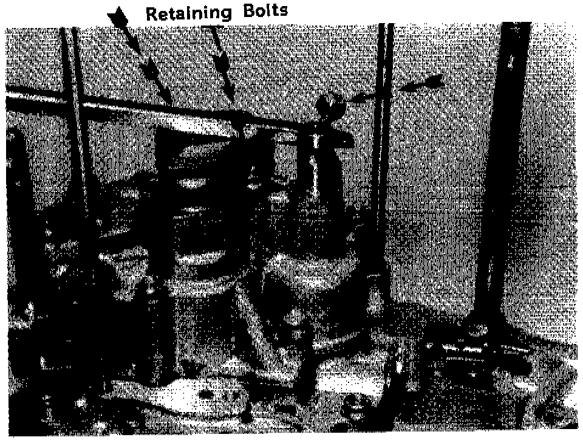

A/T - 3 and 4 Speed Rebuild Tip
TSB 86-19 (May)SUBJECT HONDA 3 & 4 SPEED
REBUILDING SERVICE TIP:

When removing the bolts which hold the second and third accumulator spring retainer, be very careful to hold pressure downward on the retainer until the bolts are completely free of the case.
The spring pressure is capable of pulling the last few threads from the case, and could cause a very expensive repair, or case replacement.
One method of performing this operation is to thread a bolt into the servo shaft and then pry down on top of the retainer, as shown in the photo below.